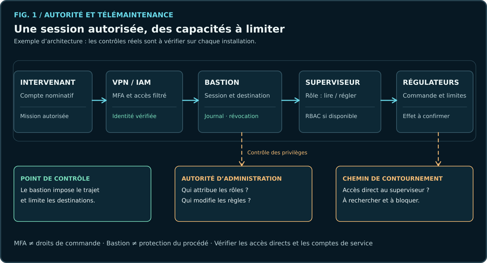
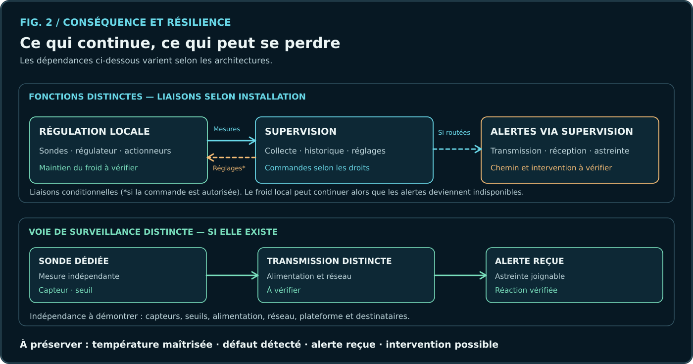

Cybersécurité du froid commercial : qui peut agir sur les installations ?
Accès de maintenance, pouvoirs de commande et protections : comprendre jusqu'où peut agir un adversaire.
Sur cette page
En octobre 2026, le CERT-FR signalait des compromissions de systèmes de supervision frigorifique.
Que peut obtenir un adversaire après avoir compromis un accès de maintenance ? Des informations, des droits de réglage, des commandes sur les équipements ? Jusqu'où peut-il agir sur le froid et les alarmes ?
Pour répondre, suivons les capacités d'action, les protections et leurs conséquences pour le magasin.
1. Une autorité nécessaire au métier
Le magasin doit conserver ses produits aux températures requises. Le frigoriste doit pouvoir surveiller l'installation, diagnostiquer un défaut et intervenir. Selon l'architecture, une supervision centralise les mesures, les alarmes et certaines commandes.
La télémaintenance facilite ces opérations. Elle confie aussi des capacités à des personnes et à des services : se connecter à un équipement, consulter des données, modifier une consigne, acquitter une alarme ou administrer un superviseur.
Première question : quelles actions chaque intervenant doit-il pouvoir exécuter, sur quels équipements et pendant combien de temps ? Le besoin de maintenance fixe le périmètre légitime des droits.
2. Comment ces capacités peuvent-elles être acquises ?
Un adversaire peut rechercher une interface exposée, récupérer un identifiant, compromettre un poste de maintenance ou exploiter une relation de confiance. Ces possibilités dépendent de l'architecture et des protections réellement en place. Aucun de ces chemins n'est attribué ici aux incidents d'octobre 2026.
Prenons une architecture illustrative : un technicien accède aux superviseurs par un VPN et un bastion. Le VPN contrôle l'entrée réseau ; le bastion contrôle les destinations et les sessions. Chaque superviseur conserve ses propres permissions de lecture, de configuration et de commande.

Trois contrôles jouent des rôles complémentaires :
- MFA : réduire le risque d'utilisation d'un identifiant volé pour ouvrir une session. Il ne neutralise pas une session déjà compromise.
- IAM et RBAC : attribuer des droits nominatifs, par rôle et par site. La lecture, le réglage et l'administration doivent être séparés lorsque les équipements le permettent.
- Bastion : centraliser les sessions, restreindre les destinations, tracer les interventions et permettre leur révocation, selon les protocoles pris en charge. Son contrôle suppose que les accès de maintenance concernés passent effectivement par lui. Les chemins directs et les comptes de contournement doivent être recensés.
La révision des comptes techniques, des prestataires sortants et des privilèges d'administration fait partie du même contrôle. Qui peut attribuer ou étendre les droits du bastion ? Cette autorité mérite autant d'attention que les droits des techniciens.
3. Jusqu'où un accès permet-il d'agir sur le froid ?
Une session ouverte permet parfois la consultation seule. Pour modifier le procédé, il faut disposer d'un chemin vers le régulateur, des permissions d'écriture et d'une commande acceptée. L'effet dépend ensuite du fonctionnement de l'installation.
Le manuel du Dixell XR60CX décrit notamment une consigne (SEt) et sa limite supérieure (US). Une même autorité capable de modifier les deux paramètres pourrait déplacer à la fois le réglage et sa borne. La possibilité de le faire depuis une supervision donnée reste à vérifier : raccordement, version, registres accessibles et habilitations.
Même lorsqu'une commande est acceptée, les protections locales, les conditions de fonctionnement et l'inertie thermique déterminent ses effets. L'évaluation doit porter sur les températures réellement atteintes, leur durée et les moyens d'intervention disponibles.
Les alarmes constituent une autre cible possible. Une température doit être mesurée, un défaut détecté, l'alerte transmise, reçue puis traitée. Un adversaire qui perturbe la surveillance peut réduire la capacité du magasin à réagir, même si la régulation locale continue de fonctionner.
Exemple documenté — XWEB EVO v5.6.0. Le manuel constructeur décrit un mode maintenance (« Service » ou « Cleaning ») activable pour une durée définie. Les alarmes des équipements placés dans ce mode sont ignorées par XWEB ; les opérations de lecture et d'écriture via cette supervision sont généralement inhibées. L'interface prévoit une permission distincte Edit Maintenance Mode. La vérification utile porte sur les personnes autorisées à activer ce mode, sa traçabilité et la surveillance disponible pendant la maintenance. Les protections locales des régulateurs doivent être évaluées séparément. Manuel XWEB EVO, p. 22 et 93.
4. Où les protections changent-elles le résultat ?

Une architecture défensive peut interrompre un chemin à plusieurs endroits : accès distant refusé, MFA, permissions en lecture seule, session limitée à un site, commande rejetée par le régulateur, protection locale ou alerte indépendante.
Chaque protection doit être associée à une capacité précise. Un bastion réduit les chemins de maintenance utilisables ; il ne remplace ni les sécurités du régulateur ni une voie d'alerte fiable.
La continuité mérite une vérification distincte. Si la supervision devient indisponible, la régulation peut poursuivre son fonctionnement local. L'astreinte peut néanmoins perdre des mesures ou des notifications. Une surveillance séparée n'apporte un secours réel que si ses sondes, son alimentation, ses communications et sa réception restent disponibles.
L'examen contradictoire cherche aussi à écarter les hypothèses : impossibilité d'atteindre le superviseur, compte sans droit d'écriture, refus de la commande, maintien de l'alerte. Ces résultats réduisent l'incertitude et évitent des corrections inutiles.
5. Ce que l'exploitant peut décider
Une évaluation ciblée doit répondre à quatre questions :
- Quels accès existent ? Interfaces exposées, télémaintenance, chemins directs et prestataires.
- Quelles autorités sont utilisables ? Comptes, MFA, rôles, droits d'administration et commandes accessibles.
- Quels effets sont possibles ? Réglages, alarmes, continuité locale, conséquences sur les produits et délais de réaction.
- Quelles protections fonctionnent ? Restrictions d'accès, refus de commandes, indépendance des alarmes et capacité d'intervention.
Ces réponses permettent de réduire les droits excessifs, de fermer les chemins inutiles et de préserver les fonctions essentielles. Elles exigent des configurations vérifiées et, lorsque c'est nécessaire, des essais autorisés avec les professionnels du froid.
Conclusion
La télémaintenance donne des capacités nécessaires au métier. La sécurité consiste à maîtriser qui peut les acquérir, les exercer ou les étendre.
L'enquête relie les accès, les droits et les commandes aux fonctions du magasin. Elle précise les conditions de réalisation d'une action adverse et les protections capables de l'arrêter. Ses résultats servent à décider où agir en priorité.
Sources et limites
- CERT-FR — Alerte sur les contrôleurs à distance de réfrigération, octobre 2026.
- Dixell/Copeland — Manuel français du régulateur XR60CX.
- Copeland/Dixell — XWEB EVO, manuel d’exploitation v5.6.0, p. 22 et 93.
- NIST — Guide to Operational Technology (OT) Security, SP 800-82 Rev. 3.
Analyse documentaire et architectures illustratives. Les incidents publics, les capacités constructeur et les hypothèses d'action sont distingués. Les droits et les protections doivent être vérifiés sur chaque installation. Aucun test actif sur un système tiers n'est revendiqué.
Pour aller plus loin
Version 3.3 — 3 novembre 2026. © 2026 lxrider — Tous droits réservés.